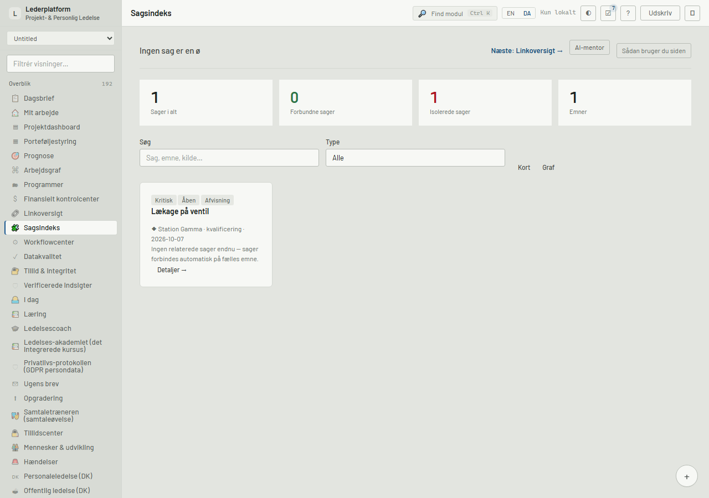

A deviation seeded through the real PATCH routes registers automatically (door 4 at app open), named by its own description, about the system its protocol qualifies ("Station Gamma" — resolved from the row's own recorded link), with the leader's own language: status "Åben", severity "Kritisk".
